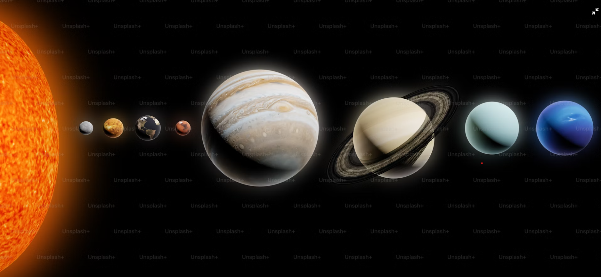

Your Daily Dose Of Cosmic Exploration And Planetary Wonders.
The Solar System
Planets in the Solar System
Mercury
Venus
Earth
Mars
Jupiter
Saturn
Uranus
Neptune

An illustration of the Solar System The Solar System is a gravitationally bound system of the Sun and the objects that orbit it. It formed approximately 4.568 billion years ago when a dense region of a molecular cloud collapsed, forming the Sun and a protoplanetary disc. The Sun is a typical star that maintains a balanced equilibrium by the fusion of hydrogen into helium at its core, releasing energy from its outer photosphere.